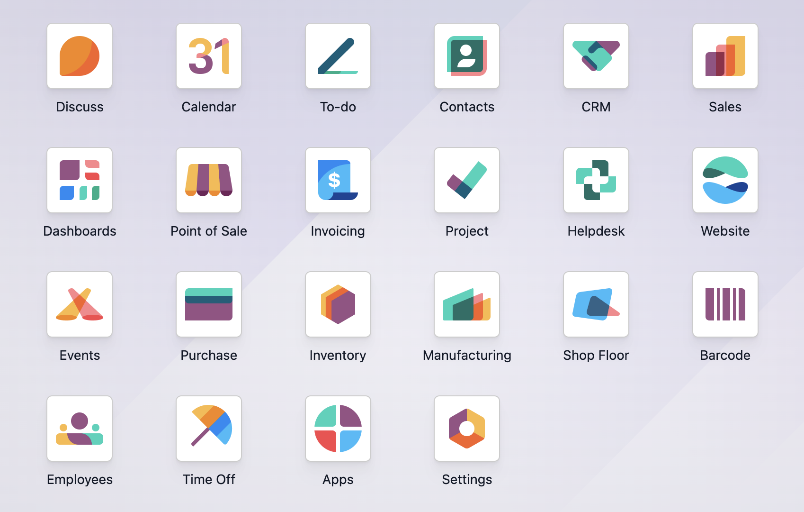

Before and after
The same apps, in standard Odoo and sorted
Standard

With Apps Menu Sort

The apps grid, the navbar apps menu, and the command palette all use the same order.
The order follows each user's own language setting, with accented names sorted correctly.
Apps and Settings are kept at the end of the list, where Odoo puts them.
Nothing is stored; uninstall the module and the original order returns.